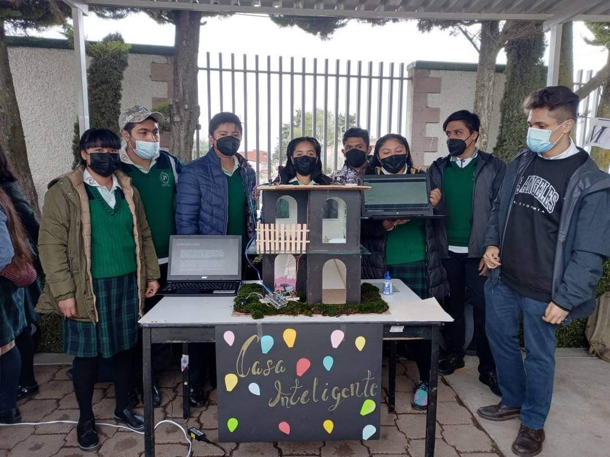

MISION

Impartir educación para media superior de calidad, en su modalidad de bachillerato tecnológico bivalente, con el objetivo de que los egresados cuenten con educación tecnológica terminal que les permita incorporarse al sector productivo, o bien, continuar sus estudios de nivel superior. Enfocados principalmente en el desarrollo del alumno una vez egresado cuente con las capacidades necesarias para poder incoparse en el ambiente laboral.
La Principal mision del CECYTEM es enfocarse en que el alumno cuente con las herramientas necesarias para que su aprendizaje dentro del plantel eduicatico sea el adecuado. Al mismo tiempo de formar al alumno es importante inculcar valores en el, principalmente el respeto, trabajo en equipo, solidaridad. Para esto contamos con programas de particuipacion estuciantil y puedan generar una mejor convivencia entre la comunidad estudiantil.
VISION

Poder generar que los egresados cuenten con las habilidades necesarias para que puedan ingresar o incoporarse al campo laboral.
Al culminar los estudios dentro de tu carrera tecnica la cual consta de 3 años, lo mismo que tardas en cursar una preparatoria oficial, tu ventaja dentro de nuestro plantel esque al terminar tus 3 años de estudio se te entrega tu Titulo de Técnico y tu certificado de preparatoria.
OBJETIVOS
- Impartir educación media superior terminal, terminal por convenio y bivalente de carácter tecnológico.
- Promover un mejor aprovechamiento social de los recursos naturales y contribuir a su utilización racional.
- Reforzar el proceso de enseñanza-aprendizaje con actividades curriculares y extracurriculares debidamente planeadas y ejecutadas.
- Promover y difundir la actitud crítica derivada de la verdad científica, la previsión y búsqueda del futuro con base en el objeto de nuestra realidad y valores nacionales.
- Promover la cultura estatal, nacional y universal, especialmente la de carácter tecnológico.
- Realizar programas de vinculación con los sectores público, privado y social que contribuyan a la consolidación del desarrollo tecnológico y social de ser humano.
- Elevar la calidad educativa de forma permanente.
- Ampliar la cobertura social y territorial en favor de la juventud del Estado de México.
- Innovar y diversificar la oferta educativa.